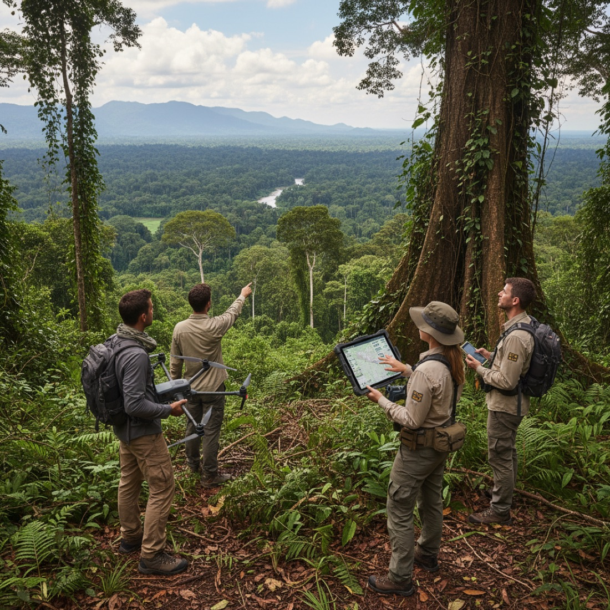
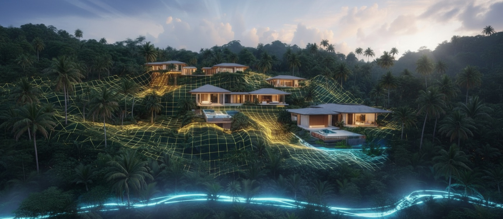

ข้อมูลที่ดินอัจฉริยะแบบดิจิทัล
EASY SCAN เปลี่ยนที่ดินจริงให้เป็นสภาพแวดล้อมดิจิทัลที่แม่นยำ เข้าใจง่าย และโต้ตอบได้ — ชั้นข้อมูลสำหรับการตัดสินใจระหว่างที่ดินดิบกับการพัฒนาในอนาคต

เราคือใคร
เข้าใจที่ดินก่อนออกแบบ ลงทุน หรือก่อสร้าง
EASY SCAN เริ่มต้นบนเกาะพะงันในปี 2020 ในฐานะการทดลองด้านการสแกนและเทคโนโลยีโดย Andrey Netovanniy ผู้ก่อตั้ง ในปีต่อ ๆ มา กระบวนการทำงานพัฒนาไปรอบ ๆ LiDAR โฟโตแกรมเมทรีด้วยโดรน การสร้างใหม่ 3 มิติ และการวิเคราะห์ภูมิประเทศ — และเปลี่ยนจากการเก็บภาพวัตถุไปสู่งานด้านที่ดินและการพัฒนาที่ใช้งานได้จริง
ปัจจุบัน EASY SCAN ผสานเทคโนโลยีการเก็บข้อมูลหลายอย่างเข้าเป็นสภาพแวดล้อมเชิงพื้นที่เดียว ที่สถาปนิก นักพัฒนา เจ้าของที่ดิน และนักลงทุนใช้ทดสอบแนวคิดและตัดสินใจได้ดีขึ้นก่อนที่การตัดสินใจนั้นจะมีค่าใช้จ่ายสูงในการแก้ไข
แนวคิดหลัก
ภูมิทัศน์มาก่อน ข้อมูลทำให้เข้าใจได้
การพัฒนาแบบเดิมแยกข้อมูลออกเป็นโฉนด แบบสำรวจ แผนที่เส้นชั้นความสูง ภาพถ่ายโดรน แบบแปลน ภาพเรนเดอร์ และตารางข้อมูล EASY SCAN รวมข้อมูลเชิงพื้นที่ที่เกี่ยวข้องทั้งหมดไว้ในสภาพแวดล้อมดิจิทัลเดียว
- 01
เก็บข้อมูล
LiDAR โฟโตแกรมเมทรีด้วยโดรน การสแกนภาคพื้นดิน และภาพ 360° บันทึกพื้นที่จริง
- 02
สร้างใหม่
Data becomes a แบบจำลองภูมิประเทศ 3 มิติ, point cloud and — where useful — a Gaussian Splatting scene.
- 03
ทดสอบ
วางแนวคิดลงบนภูมิประเทศจริงเพื่อตรวจสอบตำแหน่ง ระดับ ทางเข้า และวิว
- 04
ติดตาม
การสแกนซ้ำบันทึกงานดิน งานระบบที่ซ่อนอยู่ และความคืบหน้าการก่อสร้างตลอดช่วงเวลา
ไทม์ไลน์
จากโปรเจกต์ส่วนตัวสู่ข้อมูลที่ดินอัจฉริยะ
- 2020
โปรเจกต์ส่วนตัว
การสแกน 3 มิติและการเก็บภาพดิจิทัลของสภาพแวดล้อมจริงเริ่มต้นบนเกาะพะงัน
- 2023
ก้าวสู่มืออาชีพ
บริการมุ่งสู่งานก่อสร้าง สถาปัตยกรรม และการพัฒนาที่ดิน ช่วงเตรียมการ SMART Visa
- 2024
SMART Visa 2 ปีครั้งแรก
ขยายงานระดับมืออาชีพ ร่วมงานอุตสาหกรรม และทำงานนอกเกาะพะงัน
- 2026
การรับรองที่ต่ออายุ
ได้รับการต่ออายุการรับรอง SMART Visa for the next two years; focus expands to digital twins, concept testing and monitoring.

SMART Visa
สตาร์ทอัพเทคโนโลยีที่ได้รับการรับรองอย่างเป็นทางการในประเทศไทย
EASY SCAN ได้รับการรับรองเป็นสตาร์ทอัพเทคโนโลยีภายใต้กรอบ SMART Visa ของประเทศไทย ผ่านกระบวนการประเมินของภาครัฐที่เกี่ยวข้อง ในปี 2026 การรับรองนี้ได้รับการต่ออายุ — เป็นการสานต่อความมุ่งมั่นระยะยาวต่อเทคโนโลยีดิจิทัลขั้นสูงเพื่อการพัฒนาที่ดิน
การรับรองภายใต้กรอบสตาร์ทอัพและวีซ่าไม่ใช่ใบอนุญาตงานสำรวจ สำหรับแนวเขตตามกฎหมายและการสำรวจภูมิประเทศที่รับรองแล้ว จำเป็นต้องใช้ผู้สำรวจที่มีใบอนุญาตหรือหน่วยงานราชการไทยที่เกี่ยวข้อง
ทีมงาน
บุคคลเบื้องหลัง EASY SCAN
- ผู้ก่อตั้ง / ซีอีโอ
Andrey Netovanniy
งาน 3 มิติ LiDAR โฟโตแกรมเมทรี และสภาพแวดล้อมดิจิทัล มีพื้นฐาน Blender และงาน 3 มิติแบบครอบคลุมอย่างลึกซึ้ง
- ฝ่ายการค้า
Aleksandra Gorokhova
ฝ่ายการค้า and marketing direction.
- กฎหมาย / ฝ่ายขาย
Pavel Andreev
สนับสนุนด้านกฎหมายและดูแลความสัมพันธ์กับลูกค้า
- วิศวกรรม
Linar Khairutdinov
งานวิศวกรรมเทคนิคและการส่งมอบงาน
ร่วมงานกับเรา
เริ่มต้นที่ที่ดิน
ส่งที่ตั้งและขนาดของพื้นที่ของคุณ เราจะแนะนำแพ็กเกจที่เหมาะสมและตอบกลับภายใน 24 ชั่วโมง